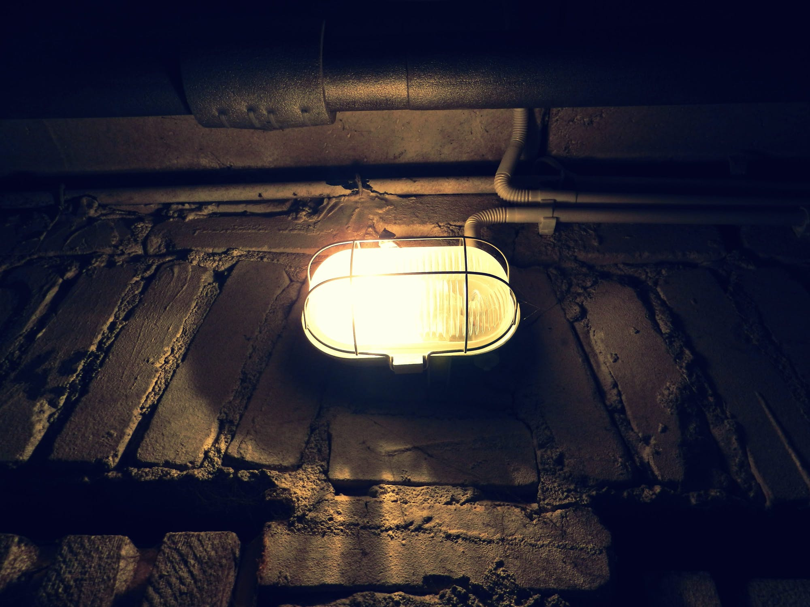

The villainous Joker has tricked Super into drinking a super-UN-super potion that turns any super hero into a normal human being! Joker has hidden the antidote to this poisonous potion somewhere inside a maze house filled with dangerous monsters!
You, dear reader, must help Super choose the right path to the antidote without being eaten alive and before Joker's potion steals 's super powers forever! Ready, let's begin...
"You'll never find the antidote in time, Super , laughed the Joker hysterically while Super dashed towards the maze house. But once Super arrived the effects of the super-Un-super potion could already be felt. Super had two choices:
"Before you, there are stairs to an open attic or a door leading to a dark basement"
Are you in, or are you out?
Upon opening the door to the maze room, Super instantly felt dizzy. The room was a spinning kaleidoscope of colors that hypnotized Super , entrancing our superhero into a helpless, childlike state.
Standing there, still as a statue in the spinning colors of the maze room, Super succumbed to the poison of the super-Un-super potion, losing all super powers. Better luck next time!
Would you like to play again? Refresh the browser!
"Surely the antidote will be hidden somewhere up high", thought Super .
Ascending the stairs Super heard a deep and terrifying roar.
Upon reaching the landing Super was face to face with the most ferocious fire breathing dragon anyone has ever seen! Our hero had to think fast before being roasted like a marshmallow!
Quickly, Super ran behind the dragon to look for the antidote but no luck!
Just then, the giant dragon swung around, tripping Super with its long scaly tail.
Falling to the ground, Super let out a scream as the giant dragon scorched our hero to cinders!
Game over man. Better luck next time.
Would you like to play again? Refresh the browser!

"If I were the Joker," thought Super , "where would I hide the antidote? Hmmmmm, somewhere dark and scary, that's where!"
Slowly, Super opened to door to the basement. Peaking inside, the coast looked clear: no monsters, no henchmen.
Stepping down the creaky stairs, Super could see in the back of the basement a glowing beaker of golden liquid. "The antidote!" shouted Super , grabbing the glowing beaker and quickly chugging down it contents.
Almost instantly, Super could feel the effects. Super would remain super after all.
Now, to go get that Joker!